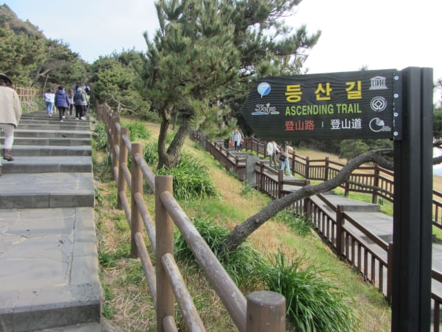

我們在下午三時半離開城山碼頭, 沿馬路一直走了差不多五十分鐘, 於下午四時十八分來到一條小徑的入口, 估計這裡便是城山日出峰 (성산일출봉)的入口了。今天在牛島已經走了很多路, 她很累, 而且看見城山日出峰也頗高, 寧可在這裡等我回來, 我唯有獨自挑戰城山日出峰。不過, 對我來說, 城山日出峰一點也不高, 可能比平常晨運的山只高小小, 應該沒有什麼難度的, 便相約一小時後回來這裡和她會合, 連同拍照, 時間應該綽綽有餘吧。

沿小徑一直走。不過, 有點奇怪, 城山日出峰上人頭湧湧, 為什麼小徑沒有其他旅客的, 應該很熱鬧才是!
來到山坡上, 向右走, 穿過叢林後, 放眼遠望, 已經看見整個城山日出峰, 隱約看見彎彎曲曲的步道一直延伸往山上。
接著往下走。
走下山坡, 穿過停車場, 售票處就在路旁, 這裡才是城山日出峰園區的入口。連忙看看營業時間, 是早上 7:00 至 傍晚 19:00, 可以安心進場了!
買了一張城山日出峰的門票, 是2,000韓元。看看城山日出峰的鳥瞰圖, 十分壯觀的, 其實就是登上巨型圓形火山噴口的邊沿。
城山日出峰 (성산일출봉)座落在濟州島東端海邊, 高海拔182公尺, 是由五千年前海底火山爆發而形成的高聳巨岩, 其頂部為巨大的圓形火山噴口。火山噴口直徑600公尺, 深90公尺, 面積高達8萬多坪, 景色十分壯觀, 令人讚嘆, 是濟州島數一數二的觀光景點。城山日出峰原本是海中的一座火山島嶼, 經過數千年海水的侵蝕, 逐漸變小, 而被侵蝕的沙石流往西南方, 堆積在濟州島東面海岸, 最終與濟州島相連成為一體, 就是我們現在所看到的形狀。欣賞風景之餘, 也讚嘆大自然的奧秘。
城山日出峰於2000年7月19日被指定為天然紀念物, 並於2007年正式登錄成為世界自然遺產。
通過驗票口, 這裡離城山日出峰登山口還有一段距離。旅客可以選擇草坪中的步道或海濱的步道走往登山口。我選擇了海濱的步道往上走, 雖然遠一些, 但可以欣賞海岸的風景。其實無論走那一條路, 只要朝著前面的日出峰巨岩一直往上走便是。
城山日出峰除了是指定為世界自然遺產外, 同時也入選為「新世界七大自然奇景」之一。
城山日出峰園區內還有其他玩意。不過, 我的目標只有一個: 登上城山日出峰的山頂。

從這裡可以清楚看到, 城山日出峰其實是一塊嶙峋的巨岩。
愈走愈高, 回頭望望, 離售票處入口很遠了。
因為已經是下午四時半了, 下山的旅客比上山的多很多。
城山日出峰登山口
向右拐個彎, 便和另一條步道會合, 這裡便是城山日出峰登山口。右邊的是下山路; 前面的是登山路, 往上一直走便可抵達山頂。
